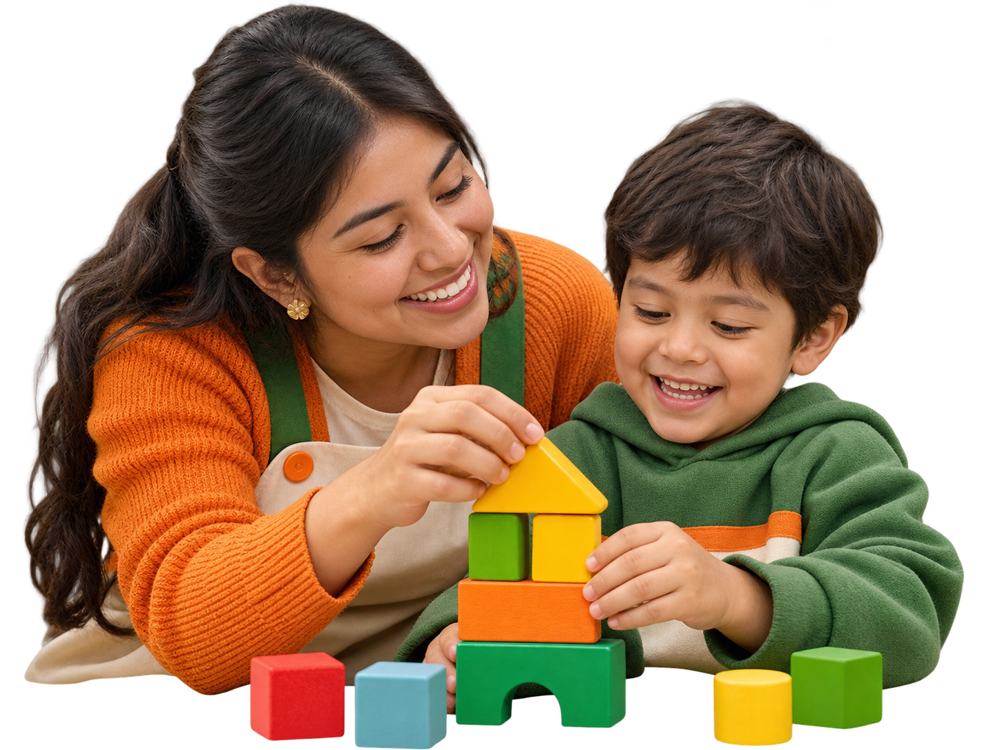
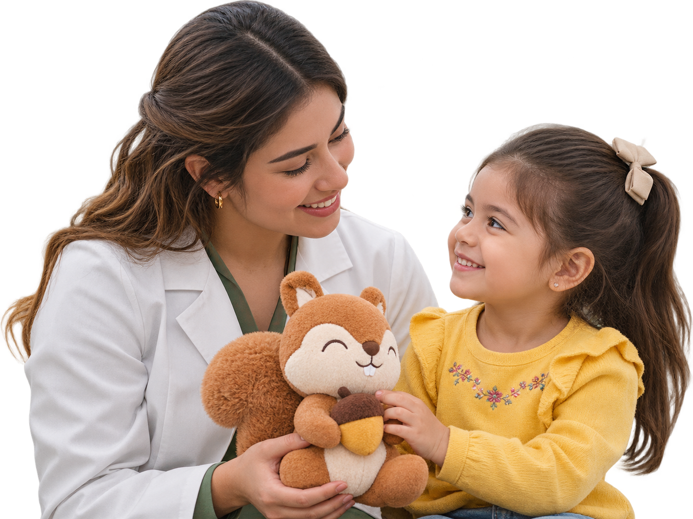

Imagen ilustrativa
CREATIVIDAD
Descubrimos colores
Juegos de arte y exploración de materiales para reconocer formas y expresarse.
NZER CARE es un servicio de cuidado infantil con un programa de desarrollo. Nuestras misses acompañan a los niños durante la mañana mediante rutinas, juego guiado, actividades de aprendizaje y convivencia.
Horario habitual: 8:40 a. m. – 12:40 p. m.
Las misses acompañan actividades organizadas que permiten explorar, compartir, imaginar y desarrollar habilidades mediante el juego, el lenguaje, la creatividad y las rutinas de cuidado.
Juegos de arte y exploración de materiales para reconocer formas y expresarse.
 Imagen ilustrativa
Imagen ilustrativaOportunidades para compartir, esperar turnos y colaborar con otros niños.

Imagen ilustrativaCuentos, imágenes y conversaciones para estimular el interés por las palabras.
Nuestro servicio combina el cuidado diario con experiencias intencionales de desarrollo infantil. Las misses acompañan las actividades y la convivencia de los pequeños, manteniendo una comunicación cercana con las familias.
Solicita información del programa y confirma la disponibilidad de cupos.